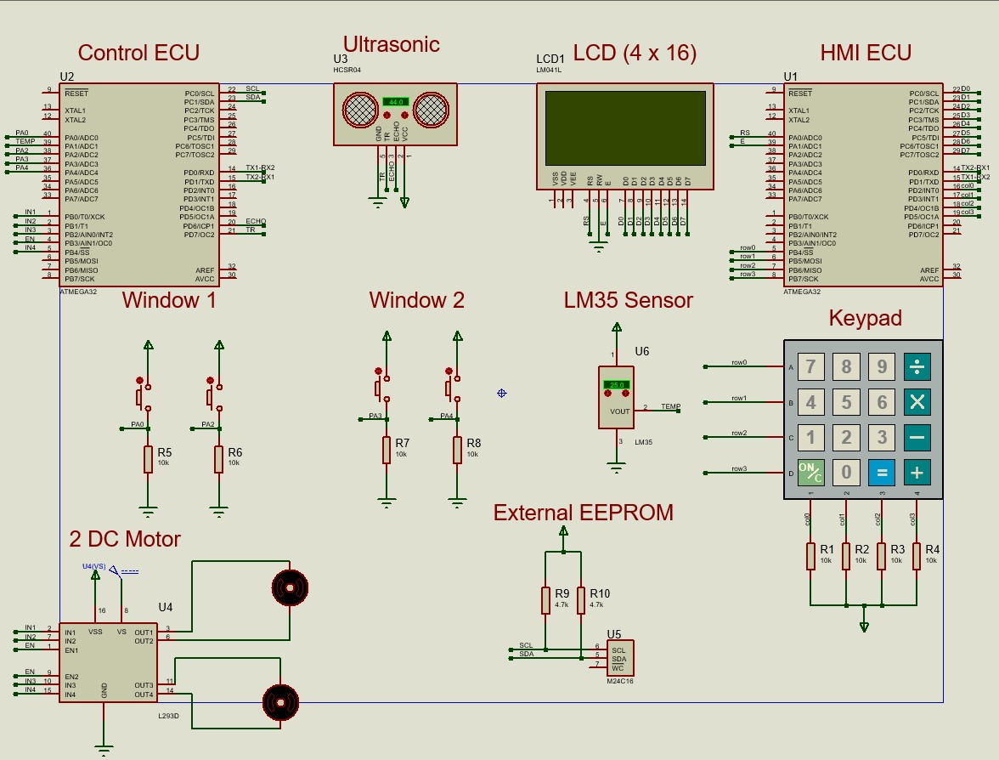

🚗 Vehicle Fault Detection & Logging System
Overview
The Vehicle Fault Detection & Logging System (VFDLS) is an automotive embedded system designed to monitor critical vehicle subsystems, detect abnormal operating conditions, log diagnostic trouble codes (DTCs), and provide real-time feedback to the driver. The system follows a Dual ECU Architecture consisting of a Human Machine Interface (HMI ECU) and a Control ECU, communicating through UART to achieve reliable monitoring, fault detection, and data logging functionality.
Objectives
- Monitor critical vehicle parameters in real time.
- Detect abnormal operating conditions.
- Store diagnostic trouble codes in external EEPROM.
- Implement a Dual ECU communication architecture.
- Provide a user-friendly monitoring interface.
- Improve vehicle safety and reliability.
Key Features
- Dual ECU Architecture.
- UART Communication Between ECUs.
- EEPROM Fault Logging.
- LM35 Temperature Monitoring.
- Ultrasonic Distance Monitoring.
- Real-Time LCD Interface.
- 4×4 Keypad Control.
- Diagnostic Trouble Codes (DTCs).
- Vehicle Window State Monitoring.
- Persistent Error Storage.
System Architecture
- HMI ECU (ATmega32).
- Control ECU (ATmega32).
- UART Communication Channel.
- LM35 Temperature Sensor.
- Ultrasonic Sensor.
- 24C16 External EEPROM.
- LCD Display Interface.
- 4×4 Keypad Interface.
- DC Motors for Window Control.
- I2C Communication for EEPROM.
Technologies Used
- ATmega32
- Embedded C
- UART
- I2C
- EEPROM 24C16
- LM35 Sensor
- Ultrasonic Sensor
- LCD Display
- Keypad
- Proteus Simulation
Fault Detection Logic
-
P001:
Accident Risk Detected
Triggered when the measured distance becomes less than 10 cm. -
P002:
Engine High Temperature
Triggered when engine temperature exceeds 90°C.
Challenges & Solutions
-
Challenge:
Communication between two independent ECUs.
Solution: Implemented UART-based communication protocol for command and data exchange. -
Challenge:
Reliable fault storage after power loss.
Solution: Stored DTCs permanently inside external EEPROM memory. -
Challenge:
Monitoring multiple subsystems simultaneously.
Solution: Distributed responsibilities between HMI ECU and Control ECU.
Results
- Successful implementation of Dual ECU architecture.
- Reliable UART communication.
- Accurate fault detection and reporting.
- Persistent EEPROM-based fault logging.
- Real-time vehicle monitoring interface.
- Successful simulation and validation in Proteus.
Future Improvements
- OBD-II Integration.
- CAN Bus Communication.
- Wireless Diagnostics.
- Mobile Application Monitoring.
- Cloud-Based Data Logging.
- Real Vehicle Deployment.
Gallery

Complete Vehicle Fault Detection System Architecture